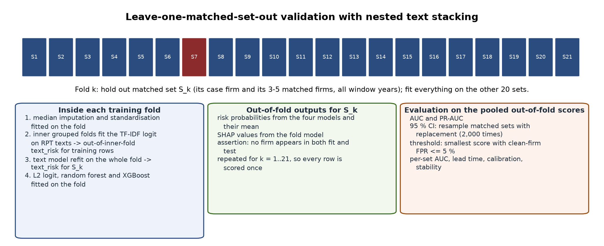

Chapter 3 — Methodology
This chapter describes how the study was carried out, in the order in which the work was done: how the sample of fraud cases and matched firms was built, where every data item was downloaded from and how it was extracted, how each variable was measured, how the hypotheses were tested, and how the results were checked. Every statistic, model and rule is defined before it is used so that a reader who did not take part in the work can reproduce every table in Chapter 4 from the files named in Appendix 3.A. The research design of 6 October 2026 fixed the hypotheses, the eight characteristics, the scoring steps and the tests before any firm data were collected; the chapter follows that design and records, in §3.11, every point at which the execution departed from it.
3.1 The methodology in one diagram
Figure 3.1 shows the whole methodology as eighteen numbered blocks in three stages. The blocks carry only a label; each is explained in §3.1.1, and the sections that follow give the full procedures.

3.1.1 Reading the diagram
Stage 1 — Sample and data produces the firm-year panel: the list of fraud cases and matched firms, their labels, and the raw filings.
- Case discovery. Every US issuer whose SEC enforcement involved a related party transaction (RPT) is searched for in four sources: the full text of every Accounting and Auditing Enforcement Release (AAER) 2005–2024, the full text of every SEC litigation release (LR) 2010–2025, EDGAR full-text search (FTS) of issuers' own filings for disclosures of an SEC related-party action, and the client's workbook of candidate firms (§3.4).
- Inclusion rule D1. A candidate qualifies when the SEC order or complaint describes a misstatement or a misappropriation in which an RPT is the mechanism, or when the charge is the failure to disclose an RPT (the disclosure-only stratum). Both groups are RPT-fraud firms (FRAUD = 1); the stratum label is kept for the design's second H2 run.
- Revelation date D2. The first public event that revealed the problem (a non-reliance 8-K, an auditor resignation, an audit-committee investigation, a short-seller report, a restatement, or the SEC action itself), with a confidence level and a source document.
- Window D3. The five fiscal years before the revelation year; a case needs at least four annual reports in that window and a window starting in 2005 or later.
- Peer matching D4. Five firms per case from the same four-digit SIC industry (three- or two-digit when the pool is thin), nearest in log total assets in the year before revelation, with a 10-K in every window year and no AAER match, matched without replacement.
- EDGAR download. For every firm: the filing list from the submissions API, every annual report (10-K, 10-KT), every proxy statement (DEF 14A), the XBRL company facts, the 8-K item codes, and every amended annual report (10-K/A) (§3.5).
Stage 2 — Measurement turns the panel into measured firm-years.
- Section extraction. From each annual report: Item 1 (Business), Item 9A (Controls and Procedures), Item 13 (Certain Relationships and Related Transactions), the related-party note to the financial statements, and the audit report; from each proxy statement: the related-party section and the board statements (§3.6).
- Eight RPT characteristics. Layer 1 financial: lending to, payables to, sales to and purchases from related parties, scaled by assets or revenue; Layer 2 disclosure: incompleteness of the related-party disclosure (four items) and vagueness of its language; Layer 3 governance: the share of non-independent directors and CEO duality (§3.7.1).
- Traditional signals. Material weakness in internal control (Item 9A), a modified or going-concern audit opinion, an auditor change (8-K Item 4.01) and a restatement (8-K Item 4.02 or a restating 10-K/A), summed into the traditional index (§3.7.2).
- Controls. Leverage and return on assets from XBRL; industry, size and year are controlled by the matching itself (§3.7.3).
- Scores. The design's five steps: raw figures, the eight ratios, each characteristic ranked 0–1 against all analysed firm-years, ranks averaged within layer, the three layer scores averaged and multiplied by ten (§3.7.4).
Stage 3 — Tests, attribution and validation answers the objectives.
- Measurement checks M1–M3. Coverage of every characteristic (by group), reliability of the machine coding against human coding, and distinctness of the three layer scores (§3.7.5).
- H1–H3. Each layer score against FRAUD within matched sets by conditional logit with leverage and ROA, Holm-adjusted across the three, with firm-clustered standard errors (§3.8.1–3.8.3).
- H4. The same test run separately in each of the five years before revelation (§3.8.4).
- H5. Model A (traditional index and controls) against Model B (plus the AI risk score), each matched set scored by a model fitted without it; and the timing test at an equal false-alarm rate (§3.8.5).
- P1. Lending, purchases and sales tabulated by form of fraud, as a pattern only (§3.8.6).
- A1–A3. Each firm's AI risk score divided by layer and characteristic; the division repeated with each matched set left out; the largest layer in the flagged fraud firms read against the three agency ideas (§3.8.7).
- Validation and exploratory work. Robustness cuts, the alternative samples, the external set of three-report cases, the power calculation and the deviations log; and, kept apart, the exploratory fitted score with its stress tests (§3.9, §3.10).
3.2 Research design
Design. A matched case-control study of US listed firms. A case is a firm named in an SEC enforcement action in which an RPT is the mechanism of a misstatement or misappropriation, or the subject of the disclosure charge. Each case is compared with up to five matched firms from the same industry and of similar size that were never subject to an SEC accounting enforcement action. The unit of analysis is the firm-year: one row per annual report per firm.
Why case-control. Enforcement for RPT fraud is rare: about thirty usable cases in twenty years. A random sample of listed firms would contain almost none, so the design samples on the outcome and supplies the comparison group by matching. The price is that base rates cannot be estimated; what can be estimated is within-set association (conditional on industry, size and year, is the measure higher in the case firm?) and discrimination (does a score separate case firm-years from matched firm-years?).
Outcome and window. FRAUD_it = 1 for a case firm i in each of the five fiscal years before the fiscal year in which the problem became public (event time t = −5 … −1) and 0 for every matched firm-year; matched firms take the window of their case. Years at or after revelation are never analysed. Because the fraud is usually under way during the window, the study measures earlier identification of fraud in progress, not prediction before it begins; any flag lies inside the window by construction.
Pre-specification and what counts as support. The hypotheses H1–H5, the proposition P1, the measurement checks M1–M3 and the attribution checks A1–A3 were fixed in the design before data collection. A hypothesis is supported when the coefficient has the predicted sign and the Holm-adjusted p-value is below 0.05 with the design's firm-clustered standard errors. Results that fail this rule are reported as not supported; no hypothesis was re-worded after the results were seen.
Association, not cause. Every test is an association within matched sets. Matched firms are firms without enforcement, not firms known to be clean.
3.3 Theoretical framework and variables
Agency theory supplies the three ideas that become the three layers: conflict of interest (an insider on both sides of a transaction can move resources; Layer 1), information asymmetry (extraction succeeds while outsiders cannot see it; Layer 2), and monitoring (boards, auditors and internal control constrain insiders; Layer 3, with audit and internal-control signals as the benchmark in H5). The efficient-transaction hypothesis supplies the competing prediction throughout: that the layers do not differ between fraud firms and matched firms. The fraud diamond labels the variables in the discussion (opportunity: RPTs and weak oversight; pressure: leverage and profitability; capability: CEO duality; rationalisation: not measured). Figure 3.2 shows the variable framework.

3.3.1 Dependent variables
| Code | Variable | Definition | Used in |
|---|---|---|---|
| FRAUD_it | RPT fraud firm-year | 1 for a case firm's fiscal years at event time −5 … −1; 0 for matched firms in the same window | H1–H5 |
| FORM_i | Form of fraud | managerial (misappropriation, self-dealing), corporate (misstatement of the accounts), both, or disclosure-only; coded once per case from the SEC order or complaint | P1 |
| STRATUM_i | Case stratum | core (RPT in the misstatement or misappropriation) or disclosure-only (the charge is the missing or incomplete disclosure) | H2 second run; descriptive splits |
3.3.2 The eight design characteristics
| Code | Characteristic | Measured as | Source in the filings | Layer |
|---|---|---|---|---|
| RP_LEND | Lending to related parties | loans, advances, notes and receivables due from related parties ÷ total assets | related-party note; Item 13; proxy section | 1 financial |
| RP_PAY | Payables to related parties | loans, notes and amounts due to related parties ÷ total assets | same | 1 |
| RP_SALES | Sales to related parties | revenue from related parties ÷ total revenue | same | 1 |
| RP_PURCH | Purchases from related parties | purchases, fees, rent and services paid to related parties ÷ total assets | same | 1 |
| RP_INCOMP | Incompleteness of the disclosure | (4 − items stated) ÷ 4; items: counterparty named, amount stated, terms stated, business purpose stated | same | 2 disclosure |
| RP_VAGUE | Vagueness of the disclosure | uncertainty and weak-modal words ÷ total words of the related-party text | same | 2 |
| BRD_NONIND | Non-independent directors | 1 − (independent directors ÷ board size) | proxy statement | 3 governance |
| DUAL | CEO duality | 1 if the chief executive also chairs the board | proxy statement | 3 |
3.3.3 Traditional signals (the reactive benchmark) and controls
| Code | Variable | Definition | Source |
|---|---|---|---|
| ICFR_MW | Material weakness | 1 if Item 9A reports a material weakness in internal control over financial reporting | 10-K Item 9A |
| AUD_OPIN | Modified or going-concern opinion | 1 if the audit report is qualified, adverse or a disclaimer, or raises substantial doubt about going concern (an adverse opinion on internal control is excluded: that is ICFR_MW) | 10-K audit report |
| AUD_CHG | Auditor change | 1 if an 8-K Item 4.01 (change in certifying accountant) was filed in the fiscal year | submissions API |
| RESTATE | Restatement | 1 if an 8-K Item 4.02 (non-reliance) was filed in the fiscal year, or a 10-K/A filed in the year states that previously issued financial statements are restated | submissions API; 10-K/A text |
| TRAD_INDEX | Traditional index | ICFR_MW + AUD_OPIN + AUD_CHG + RESTATE (0–4) | calculated |
| LEV | Leverage | total liabilities ÷ total assets, bounded to [0, 3] | XBRL company facts |
| ROA | Profitability | net income ÷ total assets, bounded to [−1, 1] | XBRL company facts |
3.4 Stage 1 — Sample construction (blocks 1–5)
Discovery (block 1). (i) Every AAER from 2005 to 2024 (2,383 releases) was downloaded from the SEC's AAER listing pages and its PDF text searched for related-party terms; (ii) every litigation release from 2010 to 2025 (5,086 releases) was read the same way, because civil actions are not all on the AAER list; (iii) EDGAR full-text search was queried for issuers' own 10-K, 10-Q and 8-K disclosures of an SEC related-party action (1,354 issuers matched; 89 on two or more query families); (iv) the client's workbook of 2 October 2026 (39 firms). Fifty-eight candidates were recorded with the order or complaint that names them.
Inclusion (block 2). Each candidate's order or complaint was read and classed: misstatement, misappropriation, both, disclosure-only, or excluded (no RPT element; internal-controls-only order). The class is FORM_i for P1 and sets the stratum.
Revelation date (block 3). For each case the first public event was located in the firm's own filings (8-K Items 4.02 and 4.01, 10-Q and 10-K text, press-release exhibits) and in the enforcement document; when nothing earlier exists the SEC action date is used and the confidence is low. An evidence pass (§3.9) later searched every medium- and low-confidence case's filings for earlier candidates with the passage extracted for reading.
Window and reports (block 4). The window is the five fiscal years before the revelation year (a fiscal year ending January–May belongs to the previous calendar year). A case needs at least four annual reports in the window and a window beginning in 2005 or later, so that Item 9A exists. Candidates with three reports form the external set; those with earlier windows an extended tier not used here.
Peer matching (block 5). For case i with revelation year r and SIC code s, the pool is every EDGAR registrant with the same four-digit SIC (three-digit, then two-digit, when fewer than eight candidates remain) that has a 10-K on file for every window year, no AAER match, and XBRL total assets A_j,r−1 for the year before revelation. The five firms minimising |ln A_j,r−1 − ln A_i,r−1| are selected without replacement across cases. The universe behind the pool is 13,110 registrants in the candidates' 33 SIC codes with total assets by calendar year from the XBRL frames API.
Result. 31 qualifying cases (21 misstatement/misappropriation, 10 disclosure-only) and 145 matched firms: 24 sets with five, 4 with four and 3 with three (thin industry pools). 123 matched firms share the case's four-digit SIC, 5 the three-digit and 12 the two-digit code; the median gap in log assets is 0.40. Three sets (Ocwen, Energy XXI, Singularity) are poorly size-matched and are reported with and without. Gulfport Energy, screened in October 2026 without a revelation date, was later dated from its own 10-Q of 1 November 2018 (audit-committee review of undisclosed CEO perquisites and related-person transactions; SEC Release 33-10930 of 24 February 2021), matched with five peers by rule D4 and, with the researcher's approval of 10 October 2026, added as the 31st case; its tables and raw filings were merged into the core data set. Ten three-report cases with 28 matched firms form the external set. The design's target of 40 cases does not exist in the records searched; the alternatives are reported in §4.9.
3.5 Stage 1 — Where the data are downloaded from (block 6)
All data are public SEC EDGAR data, fetched by the project's own Python downloader (SEC-EDGAR-Downloader, package sec_rpt_dataset) under the SEC's fair-access policy: every request carries a research User-Agent with a contact address and requests are paced below ten per second. Nothing is bought, scraped from third parties or taken from Compustat.
| Data item | Endpoint | What is taken |
|---|---|---|
| Company metadata and filing lists | https://data.sec.gov/submissions/CIK##########.json (plus the paged filings/files entries) |
name, SIC, fiscal-year end, every filing with form type, filing date, report date, accession number, primary document and 8-K item codes |
| Annual reports | https://www.sec.gov/Archives/edgar/data/<CIK>/<accession>/<primary document> |
the primary 10-K / 10-KT document of every fiscal year FY2004–2024 (the first original filing per fiscal year is the primary filing); amended 10-K/A documents are fetched separately for the restatement test |
| Proxy statements | same Archives path, form DEF 14A | the DEF 14A filed within nine months after each fiscal year end; one proxy per filing year so that board statements exist for every firm-year (85 % linked) |
| Financial statement values | https://data.sec.gov/api/xbrl/companyfacts/CIK##########.json |
total assets, total liabilities, net income, revenue, operating cash flow, as first reported for each fiscal year (FY2009 onwards; earlier years missing) |
| Size of the matching universe | https://data.sec.gov/api/xbrl/frames/us-gaap/Assets/USD/CY<year>I.json |
total assets of every registrant by calendar year, for the peer pool |
| Industry lists | https://www.sec.gov/cgi-bin/browse-edgar?action=getcompany&SIC=<code> |
every registrant in each candidate SIC code |
| 8-K items | submissions API (above) | Items 4.01 and 4.02 with filing dates, attributed to the fiscal year in progress |
| Enforcement documents | https://www.sec.gov/enforcement-litigation/accounting-auditing-enforcement-releases and .../litigation-releases listing pages and their PDFs |
AAER and LR texts for discovery and for FORM_i |
| Issuers' own disclosures of SEC actions | https://efts.sec.gov/LATEST/search-index?q=…&ciks=…&forms=… (EDGAR full-text search, filings since 2001) |
candidate discovery and the revelation-date evidence pass |
Storage. Each build writes one directory (data_core for the 31 cases and 145 matched firms, after the Gulfport build data_gulf was merged into it; data_sens for the external set; data_gulf for the Gulfport candidate) with the tables company_universe.csv, filing_manifest.csv, proxy_links.csv, eightk_items.csv, tenka_restatements.csv, xbrl_financials.csv, fraud_labels.csv, master_panel.csv and dataset_qa.json, and the raw documents under raw/filings/<CIK>/<year>/<accession>/ (filing.txt, item1.txt, item9a.txt, item13.txt, rp_note.txt, rpt_disclosure.txt) and raw/proxies/<CIK>/<accession>/proxy.txt. Any value in any table can be traced to the document it came from.
Quality. The core build of 8 October 2026: 170 firms, 2585 annual reports, zero extraction errors, related-party text for 79 % of filings, Item 9A for 90 %, XBRL total assets for 76 %. The data set is about 1.5 GB and was built and used locally.
3.6 Stage 1 — Section extraction (block 7)
Items are located in the 10-K text by line-anchored headings; table-of-contents lines are skipped and the longest candidate body is kept. Item 13 is often incorporated by reference to the proxy statement; in that case the related-party section of the DEF 14A is extracted and the source is recorded (rpt_source = 10k_item13 / def14a / rp_note / none). The related-party note is located by its heading in the financial statements. The audit report is the text from the heading Report of Independent Registered Public Accounting Firm to the signature that follows it. Texts shorter than 40 words are treated as missing, never as zero.
3.7 Stage 2 — Measurement (blocks 8–12)
3.7.1 The eight characteristics
Related-party amounts (RP_LEND, RP_PAY, RP_SALES, RP_PURCH). The related-party note and the Item 13 / proxy section are read together and split into sentences. Every money expression ('$1.2 million', '750,000', scaled by an in thousands or in millions header) is classified by the words of its sentence into one of four flows: lending (loan to, advance to, note or receivable from, due from), payables (loan from, borrowed from, note payable to, due to), sales (sales to, revenue from, billed to) and purchases (purchased from, paid to, fees, rent, royalties or services paid to). Direction words set the flow ('loan to the Company' is a payable; 'advanced by the Company' is lending). Sentences that state the Item 404 $120,000 materiality threshold and exhibit-index lines are not transactions and are excluded. The largest amount per flow is kept with its sentence as evidence and scaled by XBRL total assets (revenue for sales). A text with no amount gives a missing amount, never zero, as the design requires.
Incompleteness (RP_INCOMP). The four items are flagged on the same text: counterparty named (a titled person, an officer or director, or a named entity), amount stated (any money expression), terms stated (interest, maturity, due date, repayment, secured/unsecured, rate), purpose stated (purpose, in connection with, to fund, services, office space, …). RP_INCOMP = (4 − items)/4. When the text exists but states that there were no related-party transactions, the items are scored on that text and RP_INCOMP is high; this convention is tested in §4.3 by re-running H2 without such firm-years. When no related-party text exists the characteristic is missing.
Vagueness (RP_VAGUE). (uncertainty words + weak-modal words) ÷ total words of the related-party text, using the Loughran–McDonald uncertainty and weak-modal lists ('may', 'could', 'approximately', 'believes', 'certain', …).
Governance (BRD_NONIND, DUAL). From the proxy statement of the filing year: CEO duality = 1 when the statement that one person serves as both chair and chief executive is found (titles held at other companies and conditional language — 'whether to separate or combine' — excluded), 0 when the roles are stated to be separate or the chair is stated to be independent, missing otherwise; board independence = independent directors ÷ board size when the proxy states a count ('six of our seven directors are independent'; 'the Board has determined that Messrs A, B and C are independent' with a stated board size), and BRD_NONIND = 1 − that share.
Evidence and the human check. Every coded value stores the passage it was taken from. A 10 % random sample per variable (2,075 rows) is drawn for the human check M2, in a workbook with the evidence beside an empty column for the human value; the agreement statistics (Cohen's kappa for binary items; the share of amounts within 10 %) are computed by scripts/make_m2_workbook.py score. The coding is rule-based, not a language model reading the filings; this is recorded as a deviation (§3.11).
3.7.2 Traditional signals
ICFR_MW from Item 9A (the statement that a material weakness exists); AUD_OPIN from the audit report: substantial-doubt language for going concern, and qualified / adverse / disclaimer language for a modified opinion, excluding the paragraph on another auditor's prior-year statements and any adverse opinion on internal control; AUD_CHG from 8-K Item 4.01; RESTATE from 8-K Item 4.02, or from a 10-K/A whose text says that previously issued financial statements are restated (amendments that only add Part III or an exhibit are not restatements; every 10-K/A of every firm was fetched and read). 8-K items and 10-K/A filings are attributed to the fiscal year in progress at the filing date using the firm's fiscal-year-end month.
3.7.3 Controls
LEV and ROA from XBRL values as first reported, bounded at fixed limits because near-zero denominators in shell companies otherwise produce values of ±2,000 that dominate any standardised model; the bounds are label-free and fixed in advance. Industry, size and year are controlled by the matching: in every within-set test a fraud firm is compared only with its own matched firms in the same window.
3.7.4 From the characteristics to the scores (design steps 1–5)
| Step | What is done | Result |
|---|---|---|
| 1 | Raw figures are coded for each firm-year | amounts with evidence, four disclosure items, word counts, board figures |
| 2 | The eight characteristics are calculated | the ratios of §3.3.2 |
| 3 | Each characteristic is ranked 0–1 against all analysed firm-years (average ranks for ties; a missing value stays missing) | characteristics on one scale, not driven by extreme firms |
| 4 | Ranks are averaged within each layer over the characteristics observed for that firm-year | L1_SCORE, L2_SCORE, L3_SCORE |
| 5 | The layer scores that exist are averaged and multiplied by ten | AI_SCORE, 0–10 |
Two rules the design left open are fixed here and recorded with every run: the ranking population is the analysed window firm-years (the five-year windows of the matched sets); firm-years outside the windows and the external set are not ranked (a sensitivity run ranks against every FY2004–2024 firm-year of the same firms). A layer with no observed characteristic has no score; AI_SCORE is the mean of the layer scores that exist; a firm-year with no layer score has no AI_SCORE. The traditional index is TRAD_INDEX = ICFR_MW + AUD_OPIN + AUD_CHG + RESTATE.
3.7.5 Measurement checks
M1 coverage. For each characteristic, the share of analysed firm-years in which it can be obtained from the filings, reported for all firm-years and separately for fraud and matched firm-years, with Fisher's exact test of whether coverage differs between the groups; a difference means the subset on which a layer is tested is selected on the outcome. No coverage threshold is applied by the assistant: the layer tests use complete cases and report n; the threshold is for the supervisors to agree. M2 reliability. Machine coding against human coding on the 10 % sample at a level agreed before the result is used. M3 distinctness. Pearson correlations between the three layer scores.
3.8 Stage 3 — Tests (blocks 13–17)
3.8.1 Conditional (fixed-effects) logit within matched sets
For matched set c with firm-years i, Pr(FRAUD_ic = 1) = Λ(α_c + β x_ic + γ LEV_ic + δ ROA_ic), where Λ is the logistic function, x is the layer score and α_c a set-specific intercept. The conditional likelihood eliminates α_c by conditioning on the number of fraud firm-years m_c in each set: L = Π_c [exp(Σ_{i∈F_c} β'x_i) ÷ Σ_{S⊂c, |S|=m_c} exp(Σ_{i∈S} β'x_i)], with F_c the fraud firm-years of set c. Only sets with both outcomes contribute. Predictors are winsorised at the 1st and 99th percentiles and standardised, so exp(β) is the odds ratio per standard deviation; 95 % intervals are exp(β ± 1.96 SE).
3.8.2 Firm-clustered standard errors
The design asks for standard errors clustered by firm, because the five years of one firm are not five independent observations. For the conditional logit the per-observation score is u_i = x_i (y_i − π_i), where π_i = Pr(y_i = 1 | the set's total m_c) is computed from the elementary symmetric polynomials of the set's weights w_i = exp(β'x_i). Firms are nested in sets, so the firm sums u_f = Σ_{i∈f} u_i give the sandwich V = H⁻¹ (Σ_f u_f u_f') H⁻¹ · G/(G−1), with H the negative Hessian and G the number of firms. Both the model-based and the firm-clustered errors are reported; the firm-clustered ones are the design's test. The same clustering is used in the pooled logit (§3.8.5).
3.8.3 Holm adjustment
H1, H2 and H3 are three tests of one idea, so Holm's step-down adjustment is applied: order the three p-values p_(1) ≤ p_(2) ≤ p_(3); the adjusted values are max of the running (3 − k + 1) p_(k), capped at 1. Unadjusted values are reported beside them. H2 is run twice, with all cases and without the disclosure-only cases, as the design specifies; a third run without firm-years whose text states that there were no transactions tests the coding convention of §3.7.1, and each characteristic is also tested on its own to show what carries each layer.
3.8.4 H4 — year by year
For each event year t ∈ {−5, …, −1} the conditional logit of §3.8.1 is run on that year's firm-years alone (the primary test), and a one-sided Mann–Whitney U test (fraud > matched) is reported as a supplement. The design rule is applied per layer: H4 is met for a layer when at least one year before the final year (t ≤ −2) is significant in the predicted direction. With fifteen tests and 7–21 informative sets each, the evidence is limited either way.
3.8.5 H5 — Model A against Model B; timing at an equal false-alarm rate
Model A: FRAUD = TRAD_INDEX + LEV + ROA. Model B: Model A + AI_SCORE. Each matched set is scored by a logit fitted on the other sets (leave-one-set-out), predictors standardised inside the fitting sets, and the area under the ROC curve (AUC = Pr(score of a random fraud firm-year > score of a random matched firm-year)) is computed on the pooled out-of-set probabilities; a set bootstrap (500 resamples of matched sets) gives an interval for the gain B − A. AI_SCORE's coefficient is reported from the pooled logit with firm-clustered errors and from the conditional logit. Timing: the traditional rule is TRAD_INDEX ≥ k with the smallest k whose matched-firm (false-alarm) rate is at most 5 %; the AI rule is AI_SCORE above the quantile of the matched firm-years that gives the same false-alarm rate (and, separately, the 5 % rate). For each case the first window year each rule flags is compared; the counts earlier / same / later / neither are reported. The union of the two rules is compared with each rule alone at the union's own false-alarm rate. H5 is supported when AI_SCORE is significant in Model B, Model B's out-of-set AUC exceeds Model A's with an interval excluding zero, and the AI rule is earlier than the traditional rule in more cases than the reverse.
3.8.6 P1
For each misstatement or misappropriation case, whether any window year states a lending, sales or purchases amount, cross-tabulated by form of fraud; disclosure-only cases are shown but are not part of P1. A pattern only; no test.
3.8.7 A1–A3 on the AI risk score
A1 traceability. Because AI_SCORE = 10 × mean of the available layer scores, layer k contributes 10 × L_k / n_layers and, within a layer, characteristic c contributes 10 × rank_c / (n_obs_k × n_layers). Each firm-year's score is therefore stated as shares by layer and by characteristic, and as named evidence ('mainly DUAL and RP_INCOMP'). A2 stability. The ranks are recomputed with each matched set left out in turn; the held-out firm-years are scored against the remaining firm-years' distributions and their shares recomputed; stability is the Spearman correlation of the two scores, the mean absolute change, and the share of firm-years whose largest layer and named evidence are unchanged. A3 reading against theory. Among the fraud firm-years the AI rule flags at the 5 % matched-firm rate, the largest contributing layer is counted, and the direction of each layer (fraud mean against matched mean) is stated so that a layer working against its prediction is named as such.
3.8.8 Power
Power is restated by simulation for the final number of matched sets (21, 30, 35, 40): five matched firms and five window years per firm, a firm random effect giving within-firm correlation 0.5, the case firm of each set drawn under the conditional-logit model with Pr(firm f is the case) ∝ exp(β Σ_t x_ft / √5), β = ln(OR) for OR ∈ {1.5, 1.65, 2.0}, and the test of §3.8.1–3.8.2 at 5 % in the predicted direction (300 replications).
3.9 Validation (block 18)
(i) The battery is run on the alternative samples (21 core cases; 30; 31 with Gulfport; 35 with the five three-report cases that have five rule-matched peers) and with the alternative ranking population, and the H1–H5 results are compared side by side; (ii) robustness cuts of the exploratory score (without the poorly matched sets; with and without related-party text; by era; by revelation-date confidence); (iii) the external set of ten never-seen cases scored once with the exploratory model; (iv) the revelation-date evidence pass; (v) the measurement checks M1–M3; (vi) a deviations log written with every run.
3.10 Exploratory methods (kept apart from the design tests)
A fitted alert score is built from the 36 measured features with adequate coverage — the design characteristics, the traditional signals, Big-4 status, general financial ratios, the disclosure-language measures of Appendix 3.C, the peer-relative z-scores and a stacked text model — with three model classes (L2 logistic regression, random forest, XGBoost) whose imputers and scalers are fitted inside each training fold, averaged into one probability. Validation is leave-one-matched-set-out (Figure 3.3) with a nested text model; the threshold is the smallest score at which the matched-firm false-positive rate is at most 5 %. Because the fitted score contains the traditional signals it cannot test H5; it is reported to show what a many-input model does, with its stress tests (T1 specificity, T2 ablation, T3 lead time, T4 material-weakness persistence, T5 matched-firm rate), mediation, SHAP attribution and the external validation. Definitions of the additional measures are in Appendix 3.C.

3.11 Deviations from the design and pre-registration notes
- Role of AI. The characteristics were coded by rule with evidence passages, not by a language model reading the filings; the human check M2 has not yet been done, so every result rests on rule-based coding.
- Sample. 31 qualifying cases rather than 40; the disclosure-only cases are in the main sample as the design specifies (the first battery had kept them apart; that choice is withdrawn). Gulfport Energy was added on the researcher's approval of 10 October 2026 after its revelation date was established from its own filings.
- Thresholds. No M1 coverage threshold is applied in the layer tests; the earlier ≥ 20 % / ≥ 50 % entry rules of the first battery were set after M1 was seen and are withdrawn. M2's threshold is for the supervisors.
- Ranking population and missing layers. Fixed as stated in §3.7.4 (the design left them open).
- AUD_OPIN and RESTATE are coded as the design defines them; no qualified, adverse or disclaimer opinion was found in the sample, so AUD_OPIN equals the going-concern flag in practice.
- Firm-clustered errors are computed for the conditional logit by the sandwich of §3.8.2 (not available in the software's own implementation).
- Fitted score, text distance, abnormality and the stress tests are exploratory; the first battery's recommendation to make the fitted score the headline is withdrawn.
Appendix 3.A — Software and files
Python 3.14; pandas, numpy, scikit-learn, xgboost, statsmodels 0.15, scipy, shap, matplotlib, openpyxl. Dataset builder: SEC-EDGAR-Downloader (package sec_rpt_dataset, entry run_pipeline.py; scripts/eightk_items.py, scripts/fetch_all_proxies.py, scripts/tenka_restatements.py, scripts/make_sensitivity_set.py, scripts/make_gulfport_set.py). Modelling: PrivateResearch (package rpt_panel; main.py with steps build, model, stress, mediate, explain, report, infer; configurations rpt_panel.full_all.json, rpt_panel.sens.json, rpt_panel.gulf.json). Coders: rpt_panel/rp_note_coder.py, rpt_panel/governance_coder.py, scripts/code_audit_opinions.py. Design battery: scripts/design_tests_v2.py. M2: scripts/make_m2_workbook.py. Forty-two unit tests cover leakage, the known-answer path on a real filing, the coders, the mediation bootstrap, the T4 direction and the firm-clustered conditional logit.
Appendix 3.C — Additional measures used only by the exploratory score
Relabeling ratio (euphemistic terms ÷ words); indeterminate ratio ('certain', 'various', 'from time to time' ÷ words); transparency (share of sentences stating counterparty, amount and term together); agency masking (share of clauses with the agent removed: agentless passives, nominalisations, existential constructions); passive ratio; Fog index 0.4 × (words per sentence + 100 × share of three-syllable words); year-on-year drift of vagueness and Fog; boilerplate similarity (TF-IDF cosine between the firm's related-party text in t and t−1); specificity gap (vagueness of the related-party text minus that of Item 1); earnings–cash divergence and accruals from XBRL, bounded; leave-one-out z-scores within each set-year; peer text distance (1 − cosine between the firm's TF-IDF vector and the centroid of its set-year peers, names and honorifics removed); and the stacked text risk (a bag-of-words logistic regression on the related-party text fitted in nested grouped folds, vocabulary restricted to terms used by at least three firms).